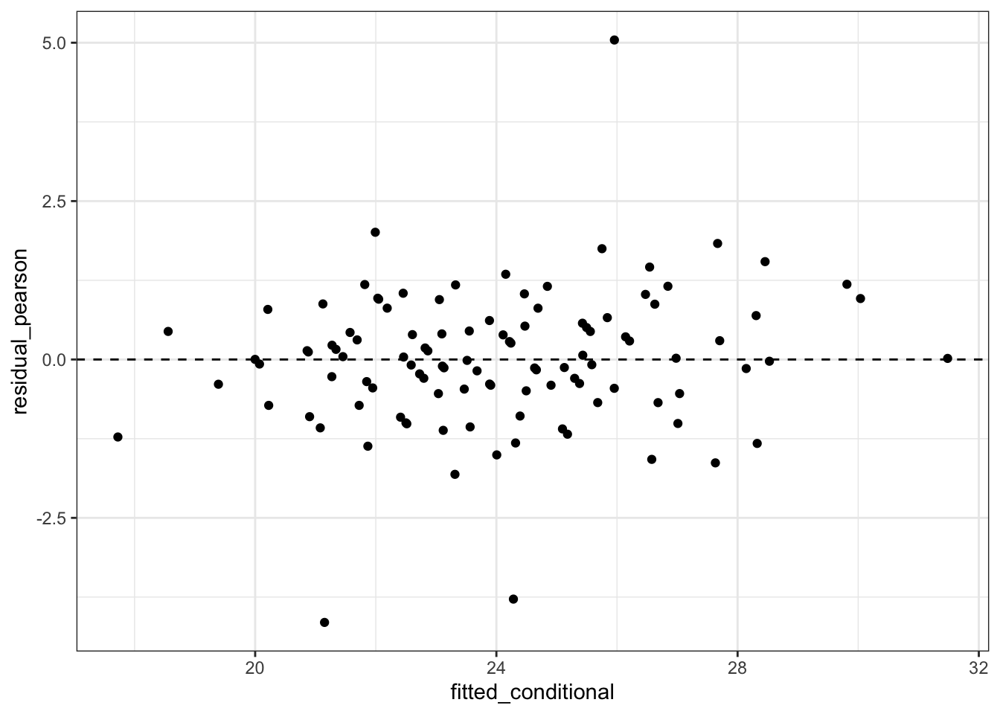
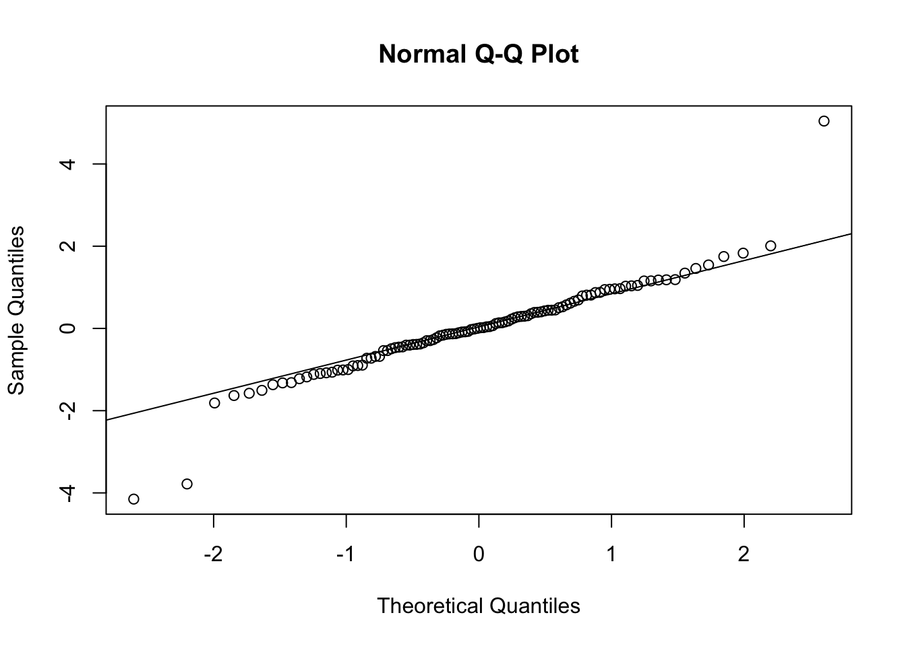
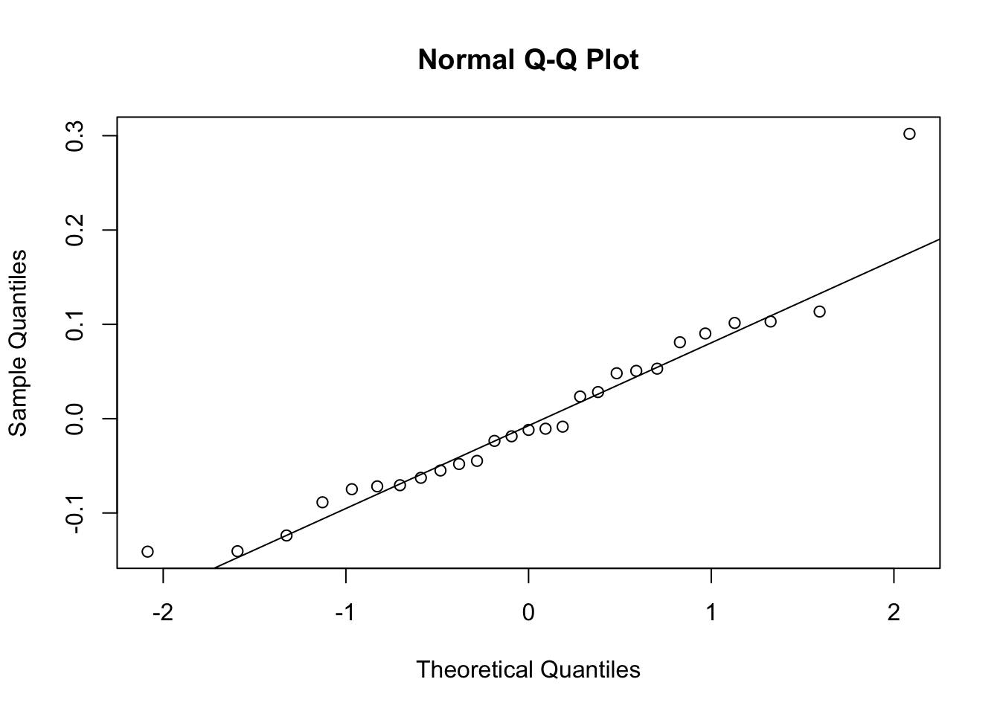
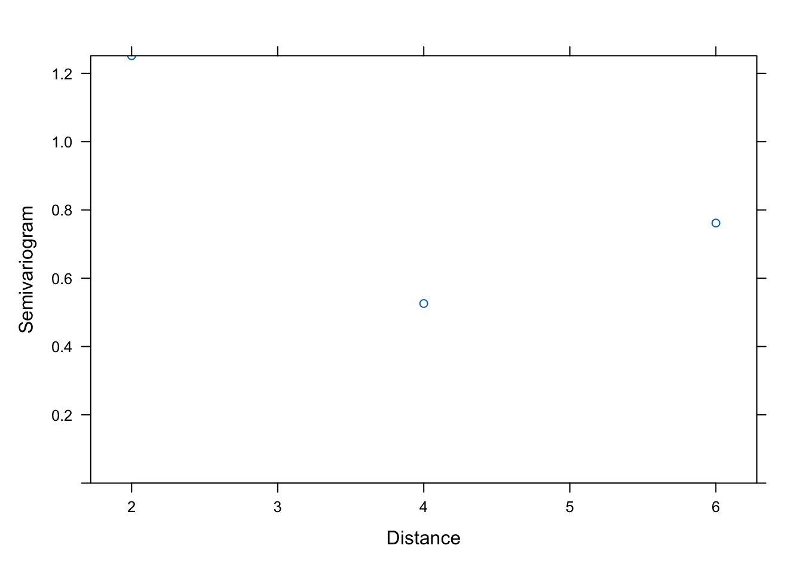
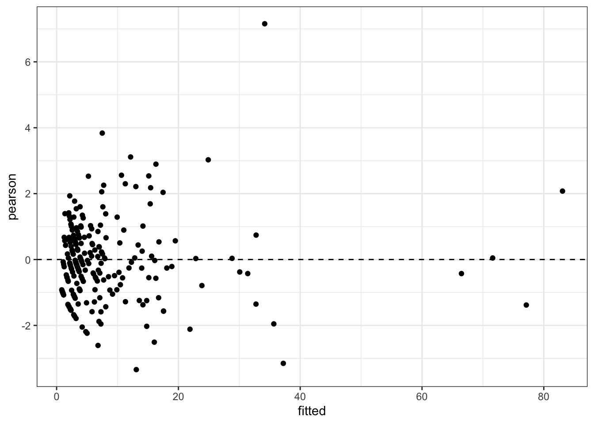
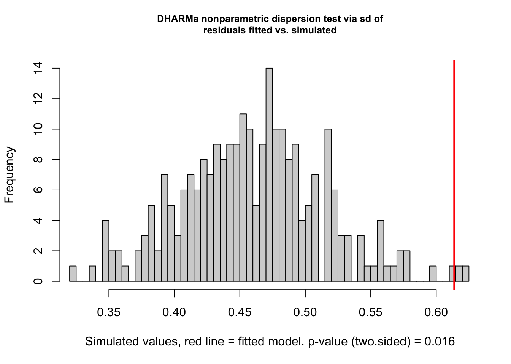

data("Orthodont", package = "nlme")
orth <- as.data.frame(Orthodont) |>
arrange(Subject, age) |>
mutate(Subject = factor(Subject), age_c = age - 8, visit = ave(age, Subject, FUN = seq_along))
data("epil", package = "MASS")
epil <- MASS::epil |>
mutate(subject = factor(subject), period_c = period - 1)A1. Inference and diagnostics
1. Aim
This appendix consolidates inferential and diagnostic operations by model class. Diagnostics target mean/link specification, residual covariance, random-effects adequacy, cluster influence, numerical convergence, and distributional dispersion; no single residual definition diagnoses all components.
2. Model specification
For an LMM, marginal residuals are \(r_i^{(m)}=Y_i-X_i\widehat\beta\) and conditional residuals are \(r_i^{(c)}=Y_i-X_i\widehat\beta-Z_i\widehat b_i\). For GLM/GLMM mean \(\widehat\mu\), Pearson residuals are \((Y-\widehat\mu)/\sqrt{\widehat{\operatorname{Var}}(Y)}\); deviance residuals are signed square roots of unit-deviance contributions. Cluster influence compares \(\widehat\beta\) with \(\widehat\beta_{(-i)}\).
3. R packages/functions
residuals() exposes model-specific residuals; nlme::Variogram() assesses remaining lag dependence; lme4::isSingular() and optimizer output assess fitted random-effects geometry; influence.ME supplies cluster deletion; DHARMa supplies simulation-based GLMM diagnostics; performance offers convenient standardized checks.
4. Data
Orthodont supplies a Gaussian LMM example and MASS::epil supplies a repeated-count GLMM example.
5. Fit
lmm <- lmer(distance ~ Sex * age_c + (age_c | Subject), orth, REML = TRUE)
gls_ar1 <- gls(
distance ~ Sex * age_c, orth,
correlation = corAR1(form = ~visit | Subject), method = "REML"
)
count_glmm <- glmer(
y ~ trt * period_c + lbase + lage + (1 | subject),
epil, family = poisson, nAGQ = 1
)6. Extract & interpret
if (requireNamespace("lmerTest", quietly = TRUE)) {
lmm_lt <- lmerTest::as_lmerModLmerTest(lmm)
anova(lmm_lt, ddf = "Satterthwaite")
anova(lmm_lt, ddf = "Kenward-Roger")
}if (requireNamespace("pbkrtest", quietly = TRUE)) {
lmm_reduced <- lmer(distance ~ Sex + age_c + (age_c | Subject), orth, REML = TRUE)
pbkrtest::KRmodcomp(lmm, lmm_reduced)
}large : distance ~ Sex * age_c + (age_c | Subject)
small : distance ~ Sex + age_c + (age_c | Subject)
stat ndf ddf F.scaling p.value
Ftest 5.1186 1.0000 25.0000 1 0.03261 *
---
Signif. codes: 0 '***' 0.001 '**' 0.01 '*' 0.05 '.' 0.1 ' ' 1confint(lmm, parm = "theta_", method = "profile") 2.5 % 97.5 %
.sig01 1.105809 2.4887325
.sig02 0.000000 0.3385631
.sig03 -1.000000 1.0000000
.sigma 1.097032 1.5884934Fixed-effect tests require the intended estimable function and denominator-df method. Variance-component CIs should respect the zero boundary. For nested fixed-effect LMM comparisons refit under ML unless using a KR comparison specifically formulated for REML fits with common random structure.
7. Diagnostics
Gaussian marginal and conditional residuals
lmm_diag <- data.frame(
fitted_conditional = fitted(lmm),
residual_conditional = resid(lmm),
residual_pearson = resid(lmm, type = "pearson"),
fitted_marginal = predict(lmm, re.form = NA),
residual_marginal = orth$distance - predict(lmm, re.form = NA)
)
ggplot(lmm_diag, aes(fitted_conditional, residual_pearson)) +
geom_point() + geom_hline(yintercept = 0, linetype = 2)
qqnorm(lmm_diag$residual_conditional); qqline(lmm_diag$residual_conditional)
re <- ranef(lmm)$Subject
qqnorm(re[["(Intercept)"]]); qqline(re[["(Intercept)"]])
qqnorm(re[["age_c"]]); qqline(re[["age_c"]])
Serial dependence and influence
vg <- Variogram(gls_ar1, form = ~age | Subject, resType = "normalized")
plot(vg, smooth = TRUE)
if (requireNamespace("influence.ME", quietly = TRUE)) {
infl <- influence.ME::influence(lmm, group = "Subject")
cd <- cooks.distance(infl)
head(sort(cd, decreasing = TRUE))
dfbetas(infl)[1:5, , drop = FALSE]
} (Intercept) Sex1 age_c Sex1:age_c
M16 -0.099657703 -0.099657703 -0.113240136 -0.113240136
M05 -0.173159480 -0.173159480 0.031415829 0.031415829
M02 -0.123789296 -0.123789296 -0.004484759 -0.004484759
M11 0.002685868 0.002685868 -0.228609402 -0.228609402
M07 -0.099659843 -0.099659843 0.007474398 0.007474398GLMM residuals, dispersion, and convergence
glmm_diag <- data.frame(
fitted = fitted(count_glmm),
pearson = residuals(count_glmm, type = "pearson"),
deviance = residuals(count_glmm, type = "deviance")
)
ggplot(glmm_diag, aes(fitted, pearson)) + geom_point() + geom_hline(yintercept = 0, lty = 2)
sum(glmm_diag$pearson^2) / (nobs(count_glmm) - length(fixef(count_glmm)))[1] 1.577399isSingular(count_glmm)[1] FALSEcount_glmm@optinfo$conv$lme4$messagesNULLif (requireNamespace("DHARMa", quietly = TRUE)) {
dh <- DHARMa::simulateResiduals(count_glmm, n = 250, plot = FALSE)
plot(dh)
DHARMa::testDispersion(dh)
DHARMa::testZeroInflation(dh)
}


DHARMa zero-inflation test via comparison to expected zeros with simulation under H0 =
fitted model
data: simulationOutput
ratioObsSim = 1.9334, p-value = 0.008
alternative hypothesis: two.sidedif (requireNamespace("performance", quietly = TRUE) &&
requireNamespace("see", quietly = TRUE)) {
performance::check_model(count_glmm)
}8. Caveats
- Marginal residuals retain random-effect variation; conditional residuals depend on estimated BLUPs and can mask random-effect misspecification.
- QQ plots of BLUPs do not directly test the latent random-effects distribution because BLUPs are heteroscedastic, correlated, and shrunken.
- Pearson/deviance residuals are discrete and nonnormal in GLMMs; simulation-based residuals are usually more interpretable.
- Cook’s distance and DFBETAs should be deleted by independent cluster, not by row, for longitudinal data.
- A flat residual variogram is evidence against remaining second-order lag structure only after the mean and random effects are adequate.
- Singularity is a boundary estimate, not an optimizer failure; convergence warnings require gradient/Hessian and rescaling checks before changing optimizers.
- SAS
PROC MIXEDinfluence measures and R package measures can use different scaling; compare rankings and deleted estimates, not labels alone. - Source-backed: residual taxonomy, variograms, and influence follow BIOS 767/STAT 571. Standard-practice addition:
DHARMa,performance, andinfluence.MEprovide native R diagnostics.
9. Source references
/Users/wenbinwu/Documents/UNC/26Spring/BIOS767/Lecture-Notes/BIOS-767-Part-012.pdf, pp. 5–14 and 26–50 (marginal/conditional residuals, variograms, influence)./Users/wenbinwu/Documents/UW/25Winter/STAT571/notes/2.3 - LMM_4.pdf, pp. 1–16 (serial correlation, residuals, random-effect checks)./Users/wenbinwu/Documents/UNC/qualify-exam/resources/notes/BIOS_767_Weideman_Typed_Notes_with_Examples.pdf, pp. 86–92 (cumulative residuals and cluster diagnostics)./Users/wenbinwu/Documents/UNC/26Spring/BIOS767/Assignments/Bios767 HW sol/HW4/PROGRAMS_HW4/02-HW4-P1C.sas, lines 103–216 (observation/case deletion influence and KR inference)./Users/wenbinwu/Documents/UNC/26Spring/BIOS767/Assignments/UNC-BIOS767/analysis_Fumin/767HW5.Rmd, residual, QQ, and influence code chunks.